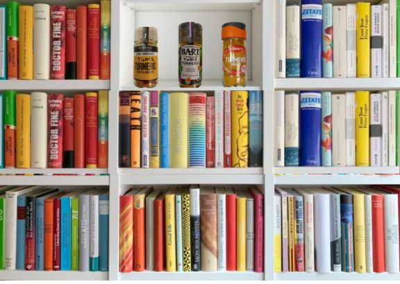
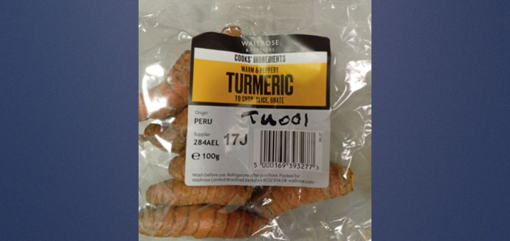
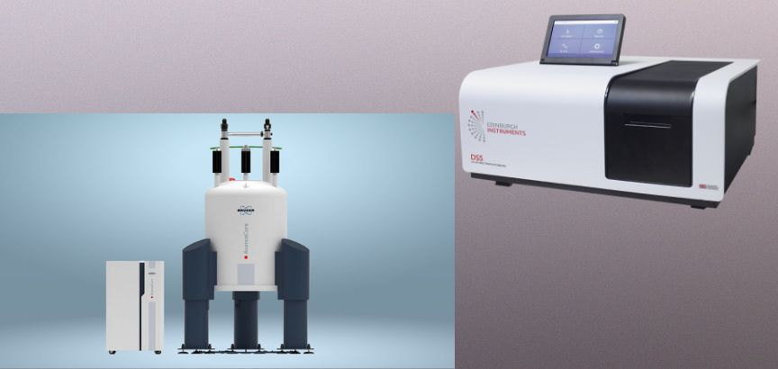
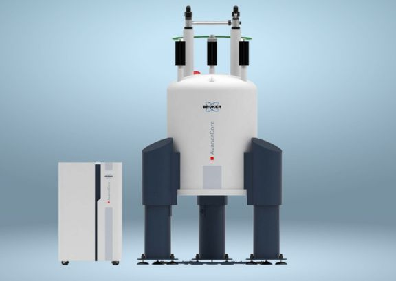
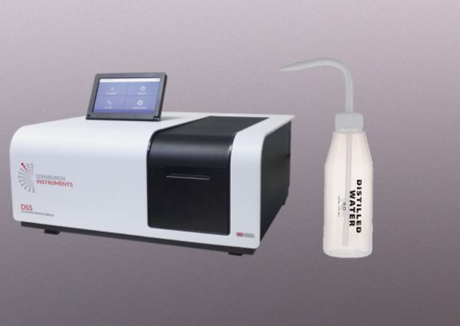
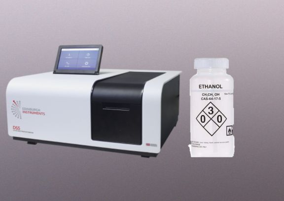
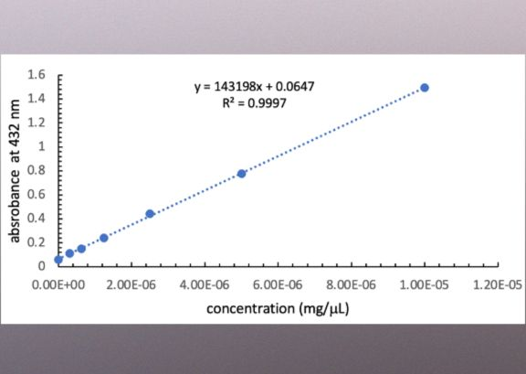
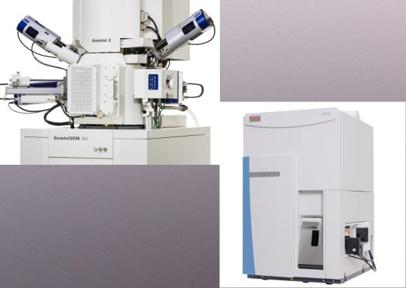

Sample Reference Library
Click to explore all turmeric samples and common adulterants analysed in this study

Click to explore all turmeric samples and common adulterants analysed in this study

click to follow step-by-step how TU001 was processed into a powder ready for extraction

click to follow step-by-step how all the samples were prepared for NMR(nuclear magnetic resonance) analysis, along with the metanil yellow spiked sample and UV-Vis (ultraviolet-visible spectrophotometry) analysis using DMSO as the solvent

click to follow step-by-step how all the samples were prepared for qNMR (qualitative NMR) analysis

click to follow step-by-step how all the samples were prepared for UV-Vis analysis using water as the solvent

click to follow step-by-step how the samples were prepared for UV-Vis analysis using ethanol as the solvent

click to follow step-by-step how the curucmin and lead chromate standards were prepared for the UV-Vis calibration curves

click to follow step-by-step how all the samples were prepared for SEM-EDX (Scanning Electron Microscopy-Energy Dispersive X-Ray) and ICP-MS (Inductively Coupled Plasma-Mass Spectrometry) analysis